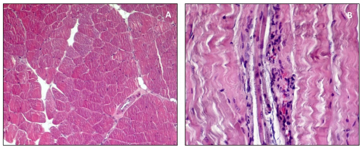

Read the information about skeletal muscle, after that, answer the activity. If there is a word you don't understand, you can look it up here.
|
In the histopathological analysis of skeletal muscle, different qualitative parameters such as shape and type of the muscle fiber; number and location of nuclei; any cellular infiltration; presence of fibrosis; and, even, necrosis are considered fundamental for the detection of morphological alterations. Equally important are the quantitative parameters such as the number of fibers. An increase in the number of fibers is a sign of hyperplasia. An increase in the size of single fibers is a sign of hypertrophy. Both qualitative and quantitative evaluations are usually carried out on muscle samples embedded in paraffin according to routine methods and are subsequently analyzed by light microscopy. The frozen sections, although easily perishable, may also be used and, in some cases, are preferred, as occurs in immunohistochemistry, when an antibody does not work well in paraffin. In the research field, electron microscopy is definitely the most effective technique. The cross sections are preferred because they allow the qualitative assessments, and they are necessary for the quantitative ones. In the research field, the choice of the muscle to be analyzed is a basic step, thus the anterior tibialis is widely used because it is easily accessible, the muscle fibers have a fairly uniform orientation and also it is rich in fast fibers. The soleus is appropriate if needing to analyze slow fibers. The cross sections, about 5 µm, are stained choosing a wide range of histochemical staining. The routine histological staining is Hematoxylin & Eosin (H&E) that stains the cytoplasm in pink and the nuclei in dark purple. H&E gives general information on the morphology of the analyzed muscle tissue sufficient to detect any alterations, both qualitative and quantitative. In an H&E stained cross section, the muscle fibers of a health sample have similar size, are gathered in bundles, the nuclei are peripheral and the sarcoplasm appears uniform and unfragmented (Figure A); signs of necrosis are eventually evidenced by inflammatory cells infiltration (Figure B), hyper-contract. 
The H&E staining is also useful for the detection of fibrosis, even if different stainings, such as Van Gieson’s or Masson’s Trichrome, are more suitable to show fibrous connective tissue. The periodic acid-Schiff staining (PAS) is appropriate for the detection of glycogen. Lastly, it is necessary to consider the histomorphometric analysis that enables the quantitative assessment of a muscle sample. Indeed, this allows counting muscle fibers in a specific area of the analyzed slide, and also the muscle fiber size can be measured. Currently, the histomorphometric analysis is mainly achieved through the use of software, such as AxioVision (used in our laboratory) and others such as MATLAB Application and Olympus Soft Imaging Solutions that allow accurate measurement of parameters, giving a major impact to the scientific investigations. |